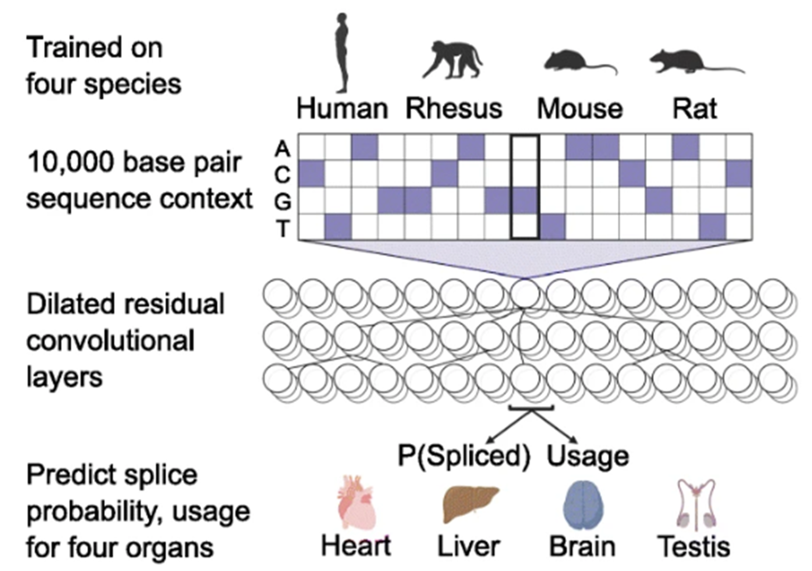
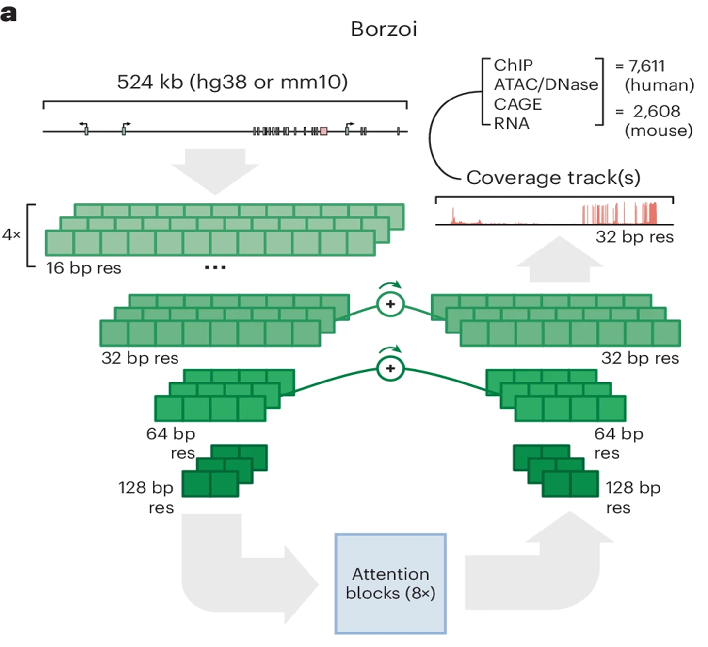

3. Sequence-to-function AI: multi-task trade-off¶
Task-specific model vs Multi-task (general) model¶
기존 sequence-to-function AI 모델들은 크게 보면 특정 task에 특화된 task-specific model과, 여러 modality를 함께 다루는 multi-task model로 나눌 수 있습니다.
Pangolin: splicing에 특화된 task-specific model¶

그림을 보면, Pangolin은 약 10,000 bp, 즉 10 kb 정도의 DNA 서열 문맥을 입력으로 사용합니다. 이 길이는 DeepSEA보다 더 넓은 주변 문맥을 볼 수 있게 해주면서도, 여전히 splicing motif와 그 주변의 국소적인 sequence grammar를 정밀하게 다루기에 충분히 짧은 범위입니다. 즉, promoter–enhancer 같은 훨씬 장거리 조절을 넓게 보는 모델은 아니지만, 적어도 splice donor/acceptor 주변에서 일어나는 중요한 서열 패턴은 비교적 충실하게 담을 수 있는 길이라고 볼 수 있습니다.
가운데 구조를 보면 Pangolin은 dilated residual convolutional layers를 사용합니다. 이런 구조는 receptive field를 넓히면서도, 각 위치의 국소적인 sequence pattern을 비교적 정밀하게 추적할 수 있게 해줍니다. 특히 splicing은 donor site, acceptor site, polypyrimidine tract, branch point처럼 비교적 좁은 범위 안의 motif 조합에 크게 의존하기 때문에, 이런 convolution 기반 구조가 잘 맞는 편입니다.
이 모델의 중요한 특징은 출력이 1 bp resolution, 즉 single-base 수준이라는 점입니다. 즉, Pangolin은 단순히 “이 구간이 스플라이싱과 관련 있다” 정도를 예측하는 것이 아니라, 각 염기 위치마다 splice donor / acceptor와 관련된 확률을 매우 세밀하게 계산합니다. 그래서 canonical GT donor motif나 AG acceptor motif처럼 정확한 염기 위치가 중요한 문제에서 높은 정밀도를 기대할 수 있습니다.
또 이 그림 아래쪽을 보면 Pangolin은 단순히 splice site 유무만 보는 것이 아니라, P(spliced) 와 usage 를 함께 예측합니다. 여기서 splice probability는 어떤 site가 실제 splice event에 사용될 가능성을 뜻하고, usage는 그 site가 얼마나 자주 사용되는지를 정량적으로 나타냅니다. 즉, 단순한 binary classification을 넘어서 splicing event의 상대적인 사용 빈도까지 예측하려고 하는 모델이라고 볼 수 있습니다.
흥미로운 점은 Pangolin이 human, rhesus, mouse, rat 네 종(species) 데이터를 함께 사용해 학습되었다는 점입니다. 그리고 출력도 심장, 간, 뇌, 고환처럼 여러 조직에 대해 나누어 예측합니다. 즉, 완전히 “한 조직 전용” 모델은 아니지만, 여전히 핵심 목표는 splicing이라는 하나의 modality를 최대한 정밀하게 예측하는 것입니다. 그래서 multimodal generalist와 비교하면 적용 범위는 좁지만, 그 대신 splicing task 자체에는 더 강한 성능을 보일 가능성이 큽니다.
정리하면, Pangolin은 입력 길이 10 kb, 출력 해상도 1 bp, 예측 대상은 splicing 이라는 점에서 전형적인 task-specific specialist model입니다. 즉, 여러 modality를 넓게 다루지는 않지만, splice donor/acceptor와 usage처럼 splicing의 핵심 문제를 single-base 수준에서 정밀하게 예측하는 데 초점을 맞춘 모델이라고 이해할 수 있습니다.
Borzoi: 더 긴 문맥과 더 많은 modality를 다루는 multi-task (general) model¶
반면 오른쪽의 Borzoi는 Pangolin 같은 task-specific model과는 다른 방향을 택한 모델입니다. 즉, 특정 task 하나를 아주 정밀하게 푸는 데 집중하기보다, 더 긴 DNA 문맥을 입력으로 받야, RNA expression, 등 여러 functional genomics modality를 함께 예측하는 multi-task model이라고 볼 수 있습니다.

그림의 가장 위를 보면, Borzoi는 약 524 kb 길이의 입력 서열을 사용합니다. 즉, 변이 주변 몇 kb만 보는 것이 아니라, 훨씬 더 넓은 genomic neighborhood를 한 번에 참고할 수 있도록 설계되어 있습니다. 이렇게 긴 입력이 필요한 이유는 실제 gene regulation이 매우 장거리적일 수 있기 때문입니다. 예를 들어 어떤 enhancer는 target promoter로부터 수십 kb 이상 떨어져 있을 수 있고, 또 전사 조절은 하나의 motif만이 아니라 넓은 chromatin context와 주변 regulatory landscape의 영향을 받습니다.
이 모델의 또 다른 특징은 여러 modality를 동시에 예측한다는 점입니다. 그림 오른쪽 위를 보면 Borzoi는 ChIP, ATAC/DNase, CAGE, RNA 와 같은 다양한 출력들을 함께 다룹니다. 즉, 하나의 DNA 서열을 보고 “이 위치가 splice site인가?”만 묻는 것이 아니라, 이 서열이 전반적으로 어떤 chromatin state와 transcriptional output을 만들지를 폭넓게 예측하려는 모델입니다. 이런 점에서 Pangolin이 “splicing task-specific model” 이라면, Borzoi는 “functional genomics multi task model”에 더 가깝다고 볼 수 있습니다.
가운데 구조를 보면 Borzoi는 표현을 여러 단계의 해상도에서 다루고 있습니다. 처음에는 비교적 세밀한 16 bp resolution에서 representation을 만들고, 이후 32 bp, 64 bp, 128 bp 수준으로 점점 압축하면서 더 넓은 범위의 정보를 통합합니다. 그리고 중간의 attention blocks를 통해 멀리 떨어진 위치들 사이의 관계를 반영하려고 합니다. 즉, 이 모델은 국소 motif만 보는 것이 아니라, 장거리 regulatory context를 더 넓게 통합하는 구조를 갖고 있습니다.
하지만 이런 장점에는 분명한 trade-off도 있습니다. 최종 출력은 32 bp bin 단위의 coverage track으로 주어지기 때문에, Pangolin처럼 1 bp 단위로 splice donor/acceptor 위치를 정밀하게 찍어 주는 방식과는 다릅니다. 즉, Borzoi는 어떤 32 bp 구간 전반에서 평균적으로 어떤 signal이 나타나는지를 예측하는 데에는 강하지만, 정확히 어느 염기 하나가 donor motif의 핵심인지, 혹은 splice acceptor의 정확한 boundary가 어디인지를 찍어내는 문제에서는 상대적으로 덜 정밀할 수 있습니다.
이 차이는 특히 splicing 같은 high-resolution task에서 중요합니다. splicing은 donor/acceptor motif, branch point, polypyrimidine tract처럼 정확한 위치와 국소적인 sequence grammar가 매우 중요한 문제입니다. 따라서 이런 task에서는 Pangolin이나 SpliceAI처럼 출력 해상도가 더 높고 task 자체에 특화된 specialist model이 더 강한 성능을 보일 수 있습니다. 즉, generalist model은 적용 범위와 modality coverage가 넓은 대신, 특정 task 하나만 놓고 보면 specialist보다 약할 수 있다는 것입니다.
정리하면, Borzoi는 더 긴 입력 문맥(524 kb) 과 더 넓은 modality coverage 를 통해 functional genomics 전반을 폭넓게 다룰 수 있는 generalist model입니다. 하지만 그 대가로 출력은 32 bp resolution 수준으로 더 거칠어지고, 특히 splicing처럼 single-base precision이 중요한 문제에서는 Pangolin 같은 specialist보다 불리할 수 있습니다. 즉, 이 그림은 breadth와 precision 사이의 trade-off 를 보여주는 대표적인 예시라고 볼 수 있습니다.
여러 modality를 폭넓게 다룰수록 범용성은 높아지지만,
특정 task의 정밀도와 정확도는 오히려 희생될 수 있습니다.
AlphaGenome은 multi-task (general) model이면서도 이런 약점을 줄이려는 시도를 보여줍니다.